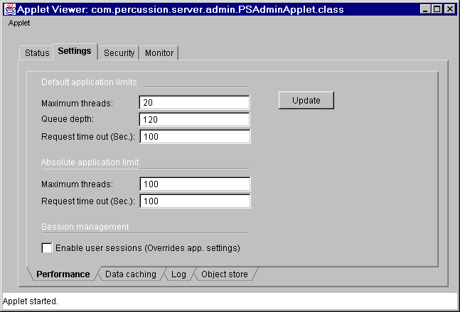
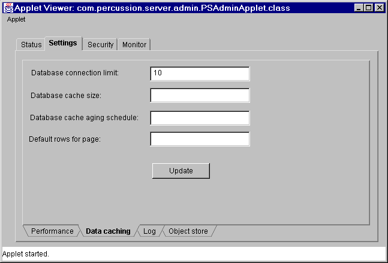
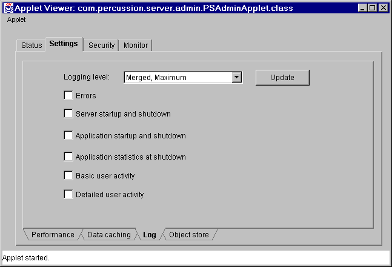
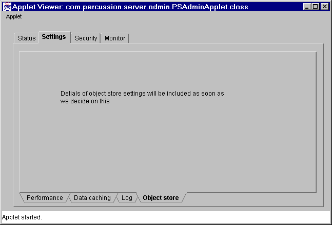

Module: Settings
This module manages all the server related settings. The settings are divided into the following groups
Another symantec.itools.awt.TabPanel, with tabs to the bottom, is used to manage the above groups.
All of these settings will be stored in E2 server configuration file (E2.ini for now). E2 server, when it starts, reads this configuration file and creates com.percussion.server.PSConfiguration object. When Admin Applet asks for the configuration options, E2 server will send this configuration data (XML file?) and Applet constructs com.percussion.server.PSConfiguration class from the XML data (Or is it easier to send the serialized com.percussion.server.PSConfiguration class across the network)
Performance

Application limits are the defaults for the new applications. Application level settings for Maximum allowed application threads, Application Queue depth and Application Request time out will be overridden by the application.
Absolute application limits and Session option in this screen will override the application setting. If user session option is disabled, no application on this server can maintain session information. Similarly if the absolute maximum threads is 20, then none of the applications on this server will be allowed to sue more than 20 threads, irrespective of the application settings.
Classes like PSUserThreadPool and PSUserSession in com.percussion.server package reads these settings and generate appropriate exceptions if the requests are out of range.
When Update button is pressed PSConfiguration object is updated with the new data from this screen and the new data will be sent to E2 server with update configuration file command. E2 server writes the new data into configuration file and updates its in memory PSServerConfiguration object.
Do we need to optimize and send only the modified values in different commands? We may do this based on the performance issues. For V1 this sends the whole configuration object to update.
Data caching

Database Connection limit is used by the PSDatabasePoolManger and PSDatabasePoolConnection objects to maintain database connections.
Cache settings will be used by PSQueryCacher object to manage data and discard cache objects which are older than the age limit.
Default Rows per page setting should be used by the result set classes like PSResultSetXmlConverter. The total result set should be broken down into number of pages based on this limit. First page of results will be displayed and the links to the rest of the pages will be sent. When user clicks the links the PSQueryCacher and PSResultSetXmlConverter objects work together to send the new results page.
All the above settings will be stored in PSConfiguration server object.When Update button is pressed PSConfiguration object is updated with the new data from this screen and the new data will be sent to E2 server with update configuration file command. E2 server writes the new data into configuration file and updates its in memory PSServerConfiguration object.
Log

The log settings will be stored in configuration file. There will be a member of PSLogHandler class inside PSServerConfiguration class. Server reads them and creates com.percussion.log.PSLogHandler object for processing log requests by other log classes. Each application as well server will have only one PSLogHandler object. Update on this screen updates the in memory PSLogHandler object and write this into configuration file as well.
Object store

Object store displays the name of configuration file (E2.ini??) and the object store settings. Changes to object store and configuration file will not effect the current running instance of the E2 server. You need to shutdown and restart E2 server to use new configuration file and object store. Update in this screen will write data into the configuration file.
First phase of E2 development uses XML files and V1 will used ODBC tables for object store. We may not have admin client until V1. So this page contains the ODBC DSN and table names for the object store. Until V1 the E2 server may load the (hard coded) configuration file from the current location or from path.